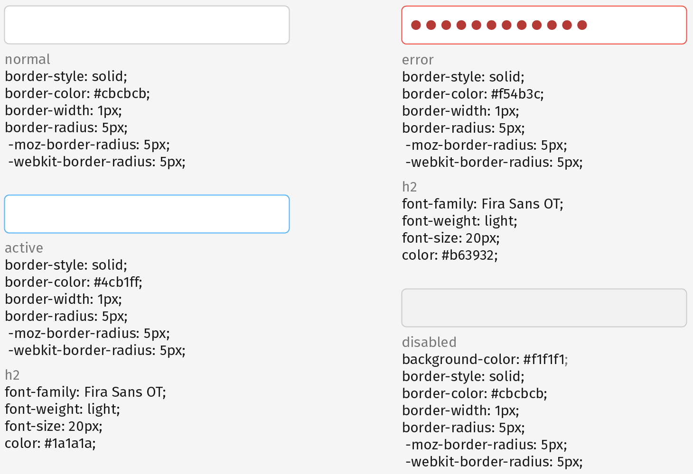
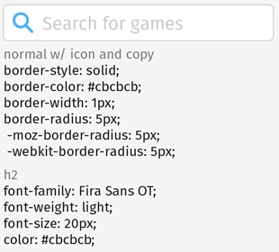
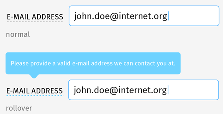

<div class="container">
	<div class="row">
		<div class="col-sm-12 col-md-12 col-lg-12">
			<h1>Forms</h1>
				<form><input type="text" class="textInput" name="firstName"></form>
				<br/>
				<br>
				<p class="longText">There are four states for form fields: <strong>normal</strong>, <strong>active</strong>, <strong>error</strong>, and <strong>disabled</strong>.
				</p>
				<br>
				<br/>
				<br>
				<p class="longText">Text labels are to the left of the form field, unless viewed in mobile portrait. Then the label is placed above the field, aligned left.
				</p>
				<br>
				<br/>
				<br>
				<p class="longText">Form fields with icons and text use the same 10px padding rules as buttons with icons and text.
				</p>
				<br>
				<br/>
				<br>
				<p class="longText">Tooltips appear over dotted-line links.
				</p>
				<br>
		</div>
	</div>
	<!-- Pagination. If you have more than one page, set the multipage variable in the Frontmatter to true. Editing the pagination code happens in /_includes/homePagination.html.
		NOTE: This is currently broken in the Jekyll ver of this template.
		-->
		{% if page.multipage %}
			{% include homePagination.html %}
		{% endif %}
